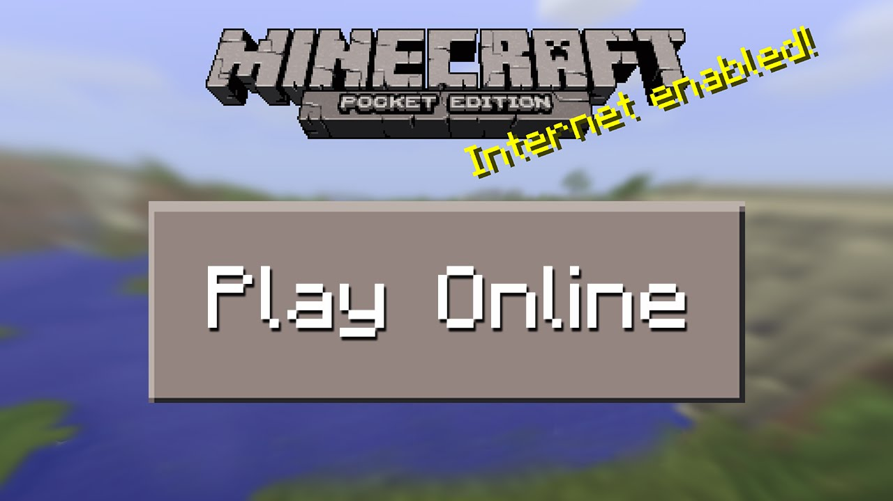

Game Reviews
Here are some top-rated games:
#1 Grand Theft Auto V
Set in the city of Los Santos, GTA V is an open world where players can take on missions as the three dysfunctional protagonists, Franklin, Michael, and Trevor. Players can also explore freely, taking advantage of a vast world with dozens of hours’ worth of content to enjoy. The online mode will let you immerse yourself in a GTA-style multiplayer experience: rob shops, betray your friends, steal airplanes, hunt for Easter eggs, and enjoy the fun-packed missions the game offers. Talk about addictive games!

#2 Minecraft
Minecraft is a sandbox-style game where you can build anything you want with the resources available in the game world. It’s still an incredibly popular game with a massive following despite being released in 2011. No wonder it’s the best-selling video game of all time! Minecraft is available on every major console and computer platform, so it’s easy to play with friends and people from all over the world, no matter what device they’re using.
